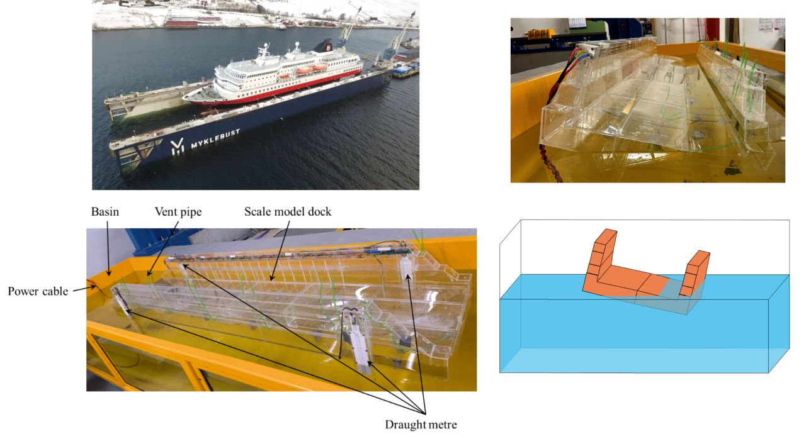

A comparative analysis of numerically simulated and experimentally measured static responses of a floating dock

Abstract
Two numerical methods, dynamic and static analyses, are proposed to calculate the static responses of a floating dock under different ballast water distributions. Model-scale experimental tests were conducted to compare with these numerical methods. The dynamic analysis includes a 6-degree-of-freedom (6-DOF) model, a hydrostatic force model and a hydrodynamic force model to simulate the dock's freely floating processes. The dock's equilibrium position is identified when the difference in the dock’s motions between two successive time steps is below a specified tolerance value. In the static analysis, the static equilibrium equations in draught, heel, and trim are solved using the Newton-Raphson method. Both dynamic and static results of the draughts at the four corners, heel, and trim are in good agreement with the corresponding experimental results, which shows the reliability of the proposed numerical methods. Moreover, the static analysis exhibits quicker convergence, requiring fewer iteration steps than the dynamic analysis.
Read the published article ↗